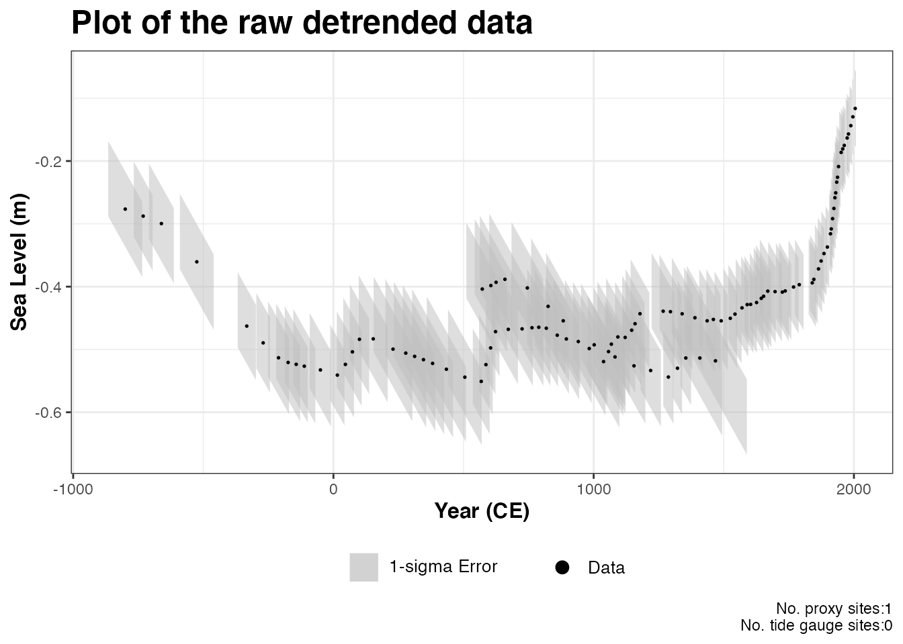
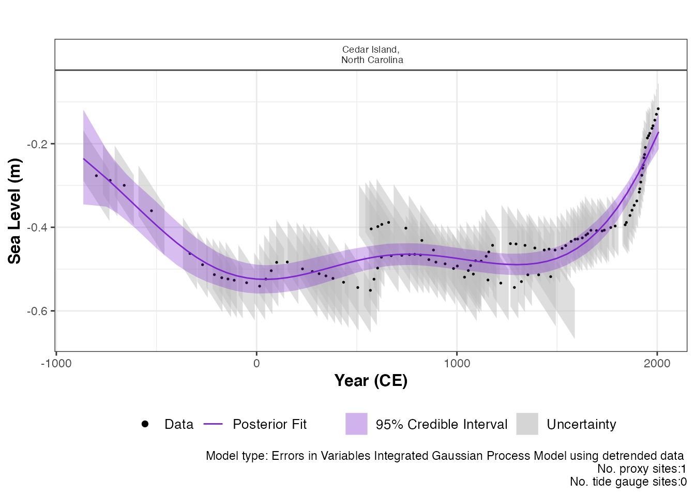
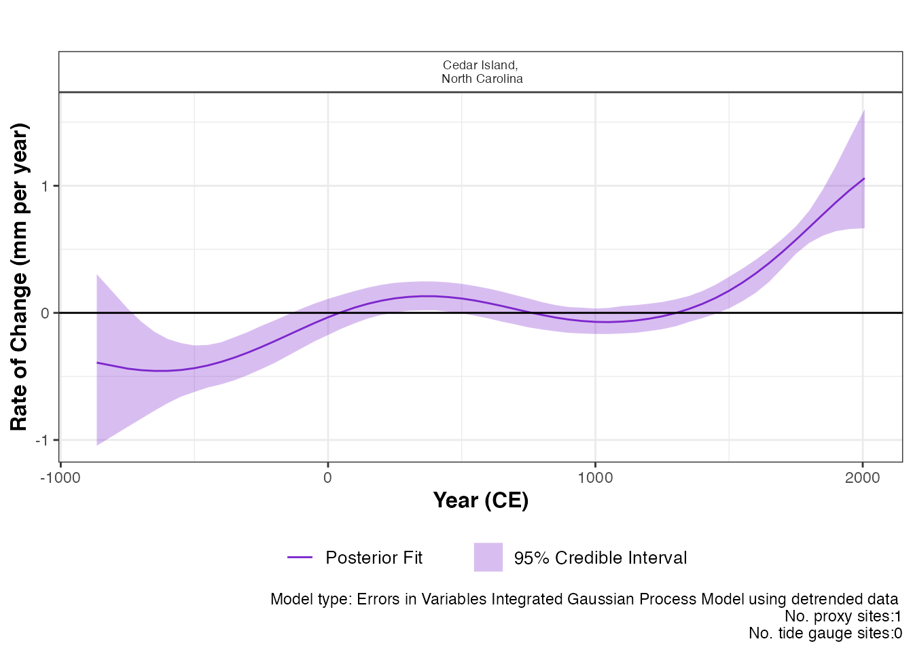

advanced_reslr.RmdIn this document we present a range of advanced options that are
available in the reslr package. To examine the all other options in the
reslr package, see the main vignette.
If you have created other examples demonstrating reslr
capabilities yourself, please contact me so I
can include them here for other people to see.
Installing reslr and loading it with:
#install.packages("reslr")
devtools::install_github("maeveupton/reslr",force = TRUE,INSTALL_opts = '--no-lock')
library(reslr)The EIV Integrated Gaussian Process model provides the underlying
rate of the process directly from the model. If the user requires a
model applied to data that has been de-trended this is available in our
package for a single site using the
model_type = "eiv_igp_t". The data is de-trended using the
linear rate which can be provided by the user within the input dataframe
along with the uncertainty associated with the rate. Or the linear rate
is calculated within the package using the data and this rate is used to
de-trend the data. In addition, the user will need to provide the
estimated year of core collection.
This technique focuses on 1 site and we do not recommended for
multiple proxy sites together. Tide gauge data can be included, however,
the user must investigate which tide gauge is suitable and the tide
gauge data will use the same linear_rate as the proxy records. As an
example, we will filter the example dataset NAACproxydata
to select one site to demonstrate the process:
# For 1 site
CedarIslandNC <- reslr::NAACproxydata %>%
dplyr::filter(Site == "Cedar Island")Step 1: Load in the data using the
reslr_load function:
CedarIslandNC_input_detrend <- reslr_load(
data = CedarIslandNC,
include_tide_gauge = FALSE,
include_linear_rate = TRUE,
TG_minimum_dist_proxy = FALSE,
list_preferred_TGs = NULL,
all_TG_1deg = FALSE,
prediction_grid_res = 50,
sediment_average_TG = 10,
detrend_data = TRUE,
core_col_year = 2010
)For this case, we update the setting detrend_data = TRUE
and we provide the core_col_year = 2010 corresponding to
the year of the core collection. The linear_rate is required and is
included by setting include_linear_rate = TRUE.
The output of this function is a list of two dataframes called
data and data_grid. - The data
dataframe is the inputted data with additional columns for the
data_type_id which will contain “ProxyRecord”. It can be accessed
by:
data <- CedarIslandNC_input_detrend$datadata_grid is a dataframe that is evenly spaced in
time based on the prediction_grid_res value chosen by the
user and is used to create the plots and is accessed by
data_grid <- CedarIslandNC_input_detrend$data_gridStep 1a: A brief insight into the outputs of the
reslr_input function can be obtained using:
print(CedarIslandNC_input_detrend)## This is a valid reslr input object with 104 observations and 1 site(s).
## There are 1 proxy site(s) and 0 tide gauge site(s).
## The age units are; Common Era.
## Decadally averaged tide gauge data was not included. It is recommended for the ni_gam_decomp model
## The linear_rate and linear_rate_err has been included.
## Data has been detrended.Step 2: Plotting the data the raw data with:
plot(
x = CedarIslandNC_input_detrend,
title = "Plot of the raw detrended data",
xlab = "Year (CE)",
ylab = "Sea Level (m)",
plot_proxy_records = TRUE,
plot_tide_gauges = FALSE
)
This will produce a plot of Age on the x-axis and Sea Level on the
y-axis in meters. Grey boxes represent the uncertainty associated with
the vertical and horizontal uncertainty. The black data points are the
midpoints of these uncertainty boxes. The extra arguments can be used
which allows the user to updated the titles and axis labels. The caption
plot_caption, included by default, provides the number of
proxy sites and tide gauge sites that will be used in the model and can
be removed if required plot_caption = FALSE. In addition,
the user can select to plot the additional tide gauge data,
plot_tide_gauge = TRUE.
Step 3: To run the eiv_igp_t model the following function should be used:
res_eiv_igp_t_detrend <- reslr_mcmc(
input_data = CedarIslandNC_input_detrend,
model_type = "eiv_igp_t",
CI = 0.95
)This command takes the input data and the user specifies the
statistical model, i.e. an integrated Gaussian process using the EIV
uncertainty method (“eiv_slr_t”). It tells reslr to store
the output of the model run in an object called
res_eiv_igp_t. The CI setting allows the user
to set the credible intervals, the current default is
CI = 0.95.
Step 3a: A brief insight into the outputs of the
reslr_output function can be obtained using:
print(res_eiv_igp_t_detrend)## This is a valid reslr output object with 104 observations and 1 site(s).
## There are 1 proxy site(s) and 0 tide gauge site(s).
## The age units are; Common Era.
## Model has used detrended data.
## The model used was the Errors-in-Variables Integrated Gaussian Process model in time for detrended data.
## The input data has been run via reslr_mcmc and has produced 3000 iterations over 3 MCMC chains.Step 4: The convergence of the algorithm is examined and he parameter estimates from the model can be investigated using the following:
summary(res_eiv_igp_t_detrend)## No convergence issues detected.## # A tibble: 3 × 7
## variable mean sd mad q5 q95 rhat
## <chr> <num> <num> <num> <num> <num> <num>
## 1 nu 0.795 0.367 0.287 0.384 1.52 1.00
## 2 rho 0.223 0.112 0.115 0.0617 0.419 1.00
## 3 sigma_y 0.00636 0.00479 0.00458 0.000496 0.0159 1.00If the model run has the package will print: “No convergence issues
detected”. If the package prints: “Convergence issues detected, a longer
run is necessary”. The user is required to update the
reslr_mcmc function with additional iterations in the
following manner:
res_eiv_igp_t_detrend <- reslr_mcmc(
input_data = CedarIslandNC_input_detrend,
model_type = "eiv_igp_t",
# Update these values
n_iterations = 6000, # Number of iterations
n_burnin = 1000, # Number of iterations to discard at the beginning
n_thin = 4, # Reduces number of output samples to save memory and computation time
n_chains = 3 # Number of Markov chains
)For the parameter estimates, the length scale parameter, “rho” is the correlation parameter and “nu” is the standard deviation of the rate process. “sigma_y” is the variation of the model.
Step 5: The results from the EIV IGP model for the de-trended data can be illustrated using:
plot(res_eiv_igp_t_detrend,
plot_type = "model_fit_plot",
xlab = "Year (CE)",
ylab = "Sea Level (m)",
plot_proxy_records = TRUE,
plot_tide_gauges = FALSE
)
The output of this function is a graph of the input data, i.e. Age and
SL and associated uncertainty boxes, and the model fit with 95 %
credible interval. The caption provides the model type used and number
of proxy sites and tide gauge sites used and can be removed if necessary
with plot_caption = FALSE. In order to view the rate of
change plot, the following setting should be used:
plot(res_eiv_igp_t_detrend,
plot_type = "rate_plot",
xlab = "Year (CE)",
y_rate_lab = "Rate of Change (mm per year)"
) This prints the plot of the rate of change with 95 % credible intervals. The caption provides the model type, the number of proxy sites and tide gauge sites that were used.
To examine the data creating these plots the user types the following:
output_dataframes <- res_eiv_igp_t_detrend$output_dataframes
head(output_dataframes)## # A tibble: 6 × 14
## Longitude Latitude SiteName linear_rate linear_rate_err data_type_id Age
## <dbl> <dbl> <fct> <dbl> <dbl> <fct> <dbl>
## 1 -76.4 35.0 "Cedar Isla… 0.741 0.00971 ProxyRecord -865.
## 2 -76.4 35.0 "Cedar Isla… 0.741 0.00971 ProxyRecord -750
## 3 -76.4 35.0 "Cedar Isla… 0.741 0.00971 ProxyRecord -700
## 4 -76.4 35.0 "Cedar Isla… 0.741 0.00971 ProxyRecord -650
## 5 -76.4 35.0 "Cedar Isla… 0.741 0.00971 ProxyRecord -600
## 6 -76.4 35.0 "Cedar Isla… 0.741 0.00971 ProxyRecord -550
## # ℹ 7 more variables: pred <dbl>, upr <dbl>, lwr <dbl>, rate_pred <dbl>,
## # rate_upr <dbl>, rate_lwr <dbl>, CI <chr>The default input age for the reslr package is in units of years in
the Common Era. The user can select to input the age value in Before
Present by updating the input_age_type = "BP". Inside the
package, the Age is converted into CE in order to run the models. The
plots are then altered to account for the input age in BP and the axis
is be reversed. Here is an example of how this is done using the same
example site as the previous case but using a Noisy Input spline in time
instead.
As an example, we will filter the example dataset
NAACproxydata to select one site to demonstrate the
process:
# For 1 site
CedarIslandNC <- reslr::NAACproxydata %>%
dplyr::filter(Site == "Cedar Island")Step 1: Load in the data using the
reslr_load function:
CedarIslandNC_input_age_BP <- reslr_load(
data = CedarIslandNC,
include_tide_gauge = FALSE,
include_linear_rate = FALSE,
TG_minimum_dist_proxy = FALSE,
list_preferred_TGs = NULL,
all_TG_1deg = FALSE,
prediction_grid_res = 50,
sediment_average_TG = 10,
input_age_type = "BP"
)For this case, we update the setting
input_age_type = "BP".
The output of this function is a list of two dataframes called
data and data_grid. - The data
dataframe is the inputted data with additional columns for the
data_type_id which will contain “ProxyRecord”. A column is included to
identify the Age_type = "BP" and an additional column is
included called Age_BP which contains the original input
Age in units Before Present. It can be accessed by:
data <- CedarIslandNC_input_age_BP$datadata_grid is a dataframe that is evenly spaced in
time based on the prediction_grid_res value chosen by the
user and is used to create the plots and is accessed by
data_grid <- CedarIslandNC_input_age_BP$data_gridStep 1a: A brief insight into the outputs of the
reslr_input function can be obtained using:
print(CedarIslandNC_input_age_BP)Step 2: Plotting the data the raw data with:
plot(
x = CedarIslandNC_input_age_BP,
title = "Plot of the raw data with input Age in Before Present",
plot_proxy_records = TRUE,
plot_tide_gauges = FALSE
)This will produce a plot of Age in units of BP on the x-axis and RSL
on the y-axis in meters. Grey boxes represent the uncertainty associated
with the vertical and horizontal uncertainty. The black data points are
the midpoints of these uncertainty boxes. The extra arguments can be
used which allows the user to updated the titles and axis labels. The
caption plot_caption, included by default, provides the
number of proxy sites and tide gauge sites that will be used in the
model and can be removed if required plot_caption = FALSE.
In addition, the user can select to plot the additional tide gauge data,
plot_tide_gauge = TRUE.
Step 3: To run the ni_sp_t model the following function should be used:
res_ni_sp_t_age_BP <- reslr_mcmc(
input_data = CedarIslandNC_input_age_BP,
model_type = "ni_sp_t",
CI = 0.95
)This command takes the input data and the user specifies the
statistical model, i.e. an integrated Gaussian process using the EIV
uncertainty method (“eiv_slr_t”). It tells reslr to store
the output of the model run in an object called
res_ni_sp_t_age_BP. The CI setting allows the
user to set the credible intervals, the current default is
CI = 0.95.
Step 3a: A brief insight into the outputs of the
reslr_output function can be obtained using:
print(res_ni_sp_t_age_BP)Step 4: The convergence of the algorithm is examined and he parameter estimates from the model can be investigated using the following:
summary(res_ni_sp_t_age_BP)If the model run has the package will print: “No convergence issues
detected”. If the package prints: “Convergence issues detected, a longer
run is necessary”. The user is required to update the
reslr_mcmc function with additional iterations.
Step 5: The results from the EIV IGP model for the de-trended data can be illustrated using:
plot(res_ni_sp_t_age_BP,
plot_type = "model_fit_plot",
plot_proxy_records = TRUE,
plot_tide_gauges = FALSE
)The output of this function is a graph of the input data, i.e. Age
and RSL and associated uncertainty boxes, and the model fit with 95 %
credible interval. The caption provides the model type used and number
of proxy sites and tide gauge sites used and can be removed if necessary
with plot_caption = FALSE. In order to view the rate of
change plot, the following setting should be used:
plot(res_ni_sp_t_age_BP,
plot_type = "rate_plot",
y_rate_lab = "Rate of Change (mm per year)"
)This prints the plot of the rate of change with 95 % credible intervals. The caption provides the model type, the number of proxy sites and tide gauge sites that were used.
To examine the data creating these plots the user types the following:
output_dataframes <- res_ni_sp_t_age_BP$output_dataframes
head(output_dataframes)Note that if recreating these plots, the user is required to use the
Age_BP column along the x-axis as it provides the original
input age in units Before Present (BP) and the x-axis will need to be
reversed.
In this package, we have described three ways to select a tide gauge and in the example we showed how to include the closest tide gauge to the proxy site. Here we are demonstrating the other options available to the user.
# For 2 site
multi_site <- reslr::NAACproxydata %>%
dplyr::filter(Site %in% c("Cedar Island", "Nassau"))If the user has a list of chosen tide gauges from PSMSL website,
include them in a list in the reslr_load function as
demonstrated:
multi_site <- reslr_load(
data = multi_site,
include_tide_gauge = TRUE,
include_linear_rate = TRUE,
TG_minimum_dist_proxy = FALSE,
# There is no limit to the number of tide gauges provided in the list
list_preferred_TGs = c(
"ARGENTIA", "MAYPORT",
"JACKSONVILLE", "LAKE WORTH PIER",
"MAYPORT (BAR PILOTS DOCK), FLORIDA"
),
all_TG_1deg = FALSE,
prediction_grid_res = 50,
sediment_average_TG = 10
)Here is how to plot this example:
plot(
x = multi_site,
title = "Plot of the raw data",
xlab = "Year (CE)",
ylab = "Relative Sea Level (m)",
plot_tide_gauges = TRUE,
plot_proxy_records = TRUE,
plot_caption = TRUE
)If the user requires all tide gauges within 1 degree of the proxy
site, which is the equivalent of 111kms, this can be done by updating
all_TG_1deg=TRUE in the following way:
multi_site <- reslr_load(
data = multi_site,
include_tide_gauge = TRUE,
include_linear_rate = TRUE,
TG_minimum_dist_proxy = FALSE,
list_preferred_TGs = NULL,
all_TG_1deg = TRUE,
prediction_grid_res = 50
)Here is how to plot this example:
plot(
x = multi_site,
title = "Plot of the raw data",
xlab = "Year (CE)",
ylab = "Relative Sea Level (m)",
plot_tide_gauges = TRUE,
plot_proxy_records = TRUE,
plot_caption = TRUE
)In the package, all plot labels for results, i.e. x and y labels and titles, can be updated in the following manner:
# Example
final_plots <- plot(jags_output = reslr_mcmc(CedarIslandNC, model_type = "ni_spline_t"))
final_plots$plot_result
# Adding new title to the total model fit plot
final_plots$plot_result + ggplot2::ggtitle("New Title Added as Example")
final_plots$plot_result + ggplot2::xlab("New x axis label Added as Example")
final_plots$plot_result + ggplot2::ylab("New y axis label Added as Example")The user can access the dataframes creating these plots in order to recreate the output plots in their own style. To access the data frame used to create the raw plot use:
data <- CedarIslandNC_input_detrend$dataTo access the dataframe creating the output model fit plot use:
data <- res_eiv_igp_t_detrend$output_dataframesThis dataframes contains the model fit under the column
pred and the rate of change column is
rate_pred.
For the ni_gam_decomp model, there are a separate
dataframe for each component and the rate of change for each component
has a corresponding dataframe. This ensures the decomposition of the RSL
signal can be plotted with all four components together, using separate
colours to identify the different drivers of RSL change.
In the package the user has the ability access all the posterior sample for each unknown parameter in the following way:
# Example
CedarIslandNC_input <- reslr_load(
data = CedarIslandNC)
res_eiv_slr_t <-
reslr_mcmc(CedarIslandNC_input,
model_type = "eiv_slr_t")
# Accessing the slope of the EIV simple linear regression
beta <- res_eiv_slr_t$noisy_model_run_output$BUGSoutput$sims.list$beta